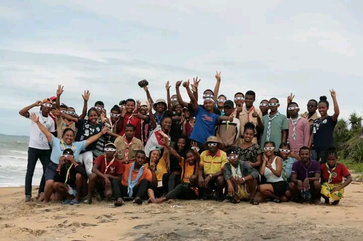
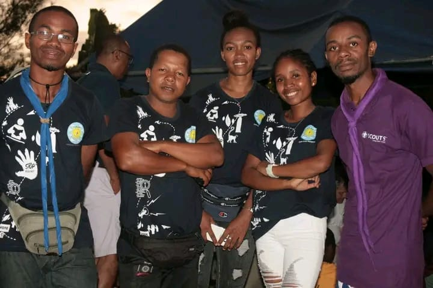
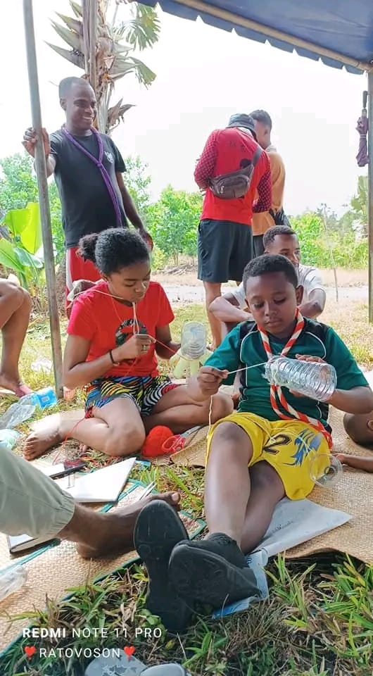

Un circuit exclusif de 27 km
Parcourez 27 km de nature préservée et découvrez 10 sites authentiques sécurisés. Une expérience écotouristique unique dans la région de Fénérive-Est, entre forêt tropicale et lac Tampolo.
Rejoignez Green Camping Tampolo pour 27 km de randonnée, de camping écoresponsable et d'immersion dans la culture Betsimisaraka au cœur de Madagascar.

Une expérience écotouristique unique alliant nature préservée, culture locale et impact positif sur les communautés de Fénérive-Est.
Parcourez 27 km de nature préservée et découvrez 10 sites authentiques sécurisés. Une expérience écotouristique unique dans la région de Fénérive-Est, entre forêt tropicale et lac Tampolo.

Des guides formés aux premiers secours vous accompagnent tout au long de votre séjour à Green Camping Tampolo pour une sécurité optimale et une immersion totale.

Reboisement actif, tri des déchets et soutien direct à plus de 20 artisans partenaires de la région de Fénérive-Est. Voyagez responsable avec Green Camping Tampolo.
De circuit écotouristique unique
Authentiques et sécurisés
Partenaires locaux soutenus